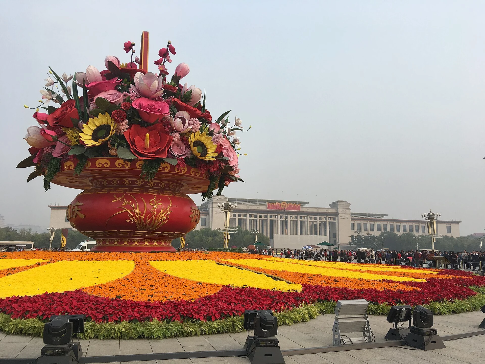

1949
启程
五星红旗冉冉升起，开启崭新时代。
盛景 · 锦绣人间
花篮盛放、蓝天辽阔、长城蜿蜒。城市与山河，共同托起属于每个人的节日记忆。

用百花与丰收，写下最热烈的生日祝词。
万里长城迎着朝阳，见证岁月绵长。
人潮相聚，共同奔赴充满希望的明天。
年轮 · 一路生花
每一个刻度，都连着无数人的努力。回望来路，是为了更坚定地走向远方。
五星红旗冉冉升起，开启崭新时代。
改革春风，激荡神州大地。
敞开怀抱，迎接世界目光。
砥砺奋进，奔赴崭新征程。
今日 · 生生不息
城市灯火、乡野新绿、实验室微光、旅途的笑脸，皆是时代生动注脚。
纵横交通缩短山海距离，让每一次出发都更有期待。
从大地到深空，好奇心把梦想送往更远处。
让良好生态成为最普惠的民生福祉。
古老文明在当代生活中焕发新的光彩。
祝福 · 纸短情长
一句祝福，一份心意。愿山河无恙，愿家国安宁。